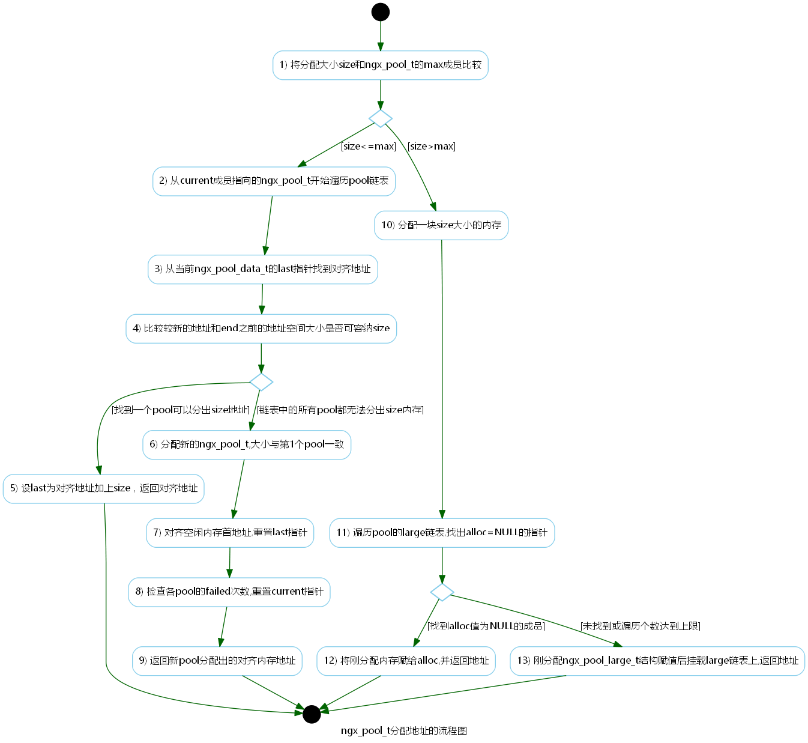

3.1 结构体
3.1.1 内存池
资源示意图
// 资源清理链表(关闭或者释放一些文件资源)
typedef void (*ngx_pool_cleanup_pt)(void *data);
typedef struct ngx_pool_cleanup_s ngx_pool_cleanup_t;
struct ngx_pool_cleanup_s {
ngx_pool_cleanup_pt handler;
void *data;
ngx_pool_cleantup_t *next;
};
// 大块内存链表
typedef struct ngx_pool_large_s ngx_pool_large_t
struct ngx_pool_large_s {
ngx_pool_large_t *next;
void *alloc;
};
// 小内存链表
typedef struct {
u_char *last;
u_char *end;
ngx_pool_t *next;
ngx_uint_t failed;
} ngx_pool_data_t;
// 内存池结构
struct ngx_pool_s {
ngx_pool_data_t d;
size_t max;
ngx_pool_t *current;
ngx_chain_t *chain;
ngx_pool_large_t *large;
ngx_pool_cleanup_t *cleanup;
ngx_log_t *log;
};
//
typdef struct {
ngx_fd_t fd;
u_char *name;
ngx_log_t *log;
} ngx_pool_cleanup_file_t;


3.1.2 error日志
资源示意图
// 日志级别
#define NGX_LOG_STDERR 0
#define NGX_LOG_EMERG 1
#define NGX_LOG_ALERT 2
#define NGX_LOG_CRIT 3
#define NGX_LOG_ERR 4
#define NGX_LOG_WARN 5
#define NGX_LOG_NOTICE 6
#define NGX_LOG_INFO 7
#define NGX_LOG_DEBUG 8
#define NGX_LOG_DEBUG_CORE 0x010
#define NGX_LOG_DEBUG_ALLOC 0x020
#define NGX_LOG_DEBUG_MUTEX 0x040
#define NGX_LOG_DEBUG_EVENT 0x080
#define NGX_LOG_DEBUG_HTTP 0x100
#define NGX_LOG_DEBUG_MAIL 0x200
#define NGX_LOG_DEBUG_STREAM 0x400
#define NGX_LOG_DEBUG_FIRST NGX_LOG_DEBUG_CORE
#define NGX_LOG_DEBUG_LAST NGX_LOG_DEBUG_STREAM
#define NGX_LOG_DEBUG_CONNECTION 0x80000000
#define NGX_LOG_DEBUG_ALL 0x7ffffff0
typedef struct ngx_log_s ngx_log_t
typedef u_char *(*ngx_log_handler_pt)(ngx_log_t *log, u_char *buf, size_t len);
typedef void (*ngx_log_writer_pt)(ngx_log_t *log, ngx_uint_t level, u_char *buf, size_t len)
struct ngx_log_s {
// 日志级别
ngx_uint_t log_level;
// 日志文件
ngx_open_file_t *file;
// 连接数
ngx_atomic_uint_t connection;
time_t disk_full_time;
// handler回调方法
ngx_log_handler_pt handler;
void *data;
ngx_log_writer_pt writer;
void *wdata;
char *action;
ngx_log_t *next;
};